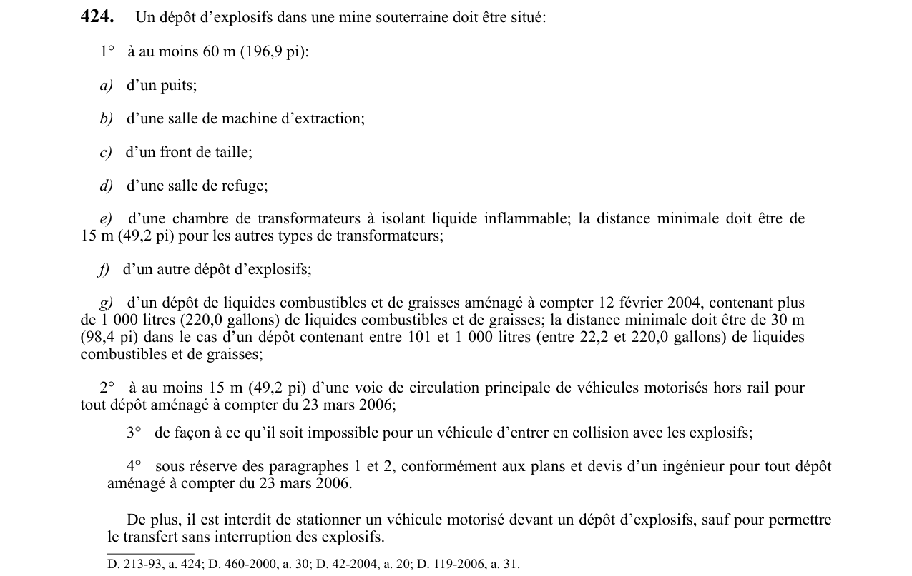

art-424-RSSM : emplacement d'un dépôt d'explosifs sous terre
Le dépôt d'explosifs d'une mine souterraine doit respecter des distances minimales de sécurité et être à l'abri des collisions. Cette obligation vise l'employeur.
- Au moins 60 m (196,9 pi) d'un puits, d'une salle de machine d'extraction, d'un front de taille, d'une salle de refuge, d'un autre dépôt d'explosifs et d'une chambre de transformateurs à isolant liquide inflammable ; 15 m (49,2 pi) suffisent pour les autres types de transformateurs.
- Dépôt de liquides combustibles et de graisses aménagé à compter du 12 février 2004 : 60 m au-delà de 1 000 litres (220,0 gallons), 30 m (98,4 pi) entre 101 et 1 000 litres (22,2 à 220,0 gallons).
- Dépôt aménagé à compter du 23 mars 2006 : au moins 15 m (49,2 pi) d'une voie de circulation principale de véhicules motorisés hors rail, et implantation conforme aux plans et devis d'un ingénieur, sous réserve des paragraphes 1 et 2.
- Emplacement choisi de façon qu'aucun véhicule ne puisse entrer en collision avec les explosifs.
- Interdiction de stationner un véhicule motorisé devant un dépôt d'explosifs, sauf pour un transfert d'explosifs sans interruption.
🌐 LegisQuébec · 📄 PDF officiel
Texte officiel
Un dépôt d’explosifs dans une mine souterraine doit être situé:
1° à au moins 60 m (196,9 pi):
a) d’un puits;
b) d’une salle de machine d’extraction;
c) d’un front de taille;
d) d’une salle de refuge;
e) d’une chambre de transformateurs à isolant liquide inflammable; la distance minimale doit être de 15 m (49,2 pi) pour les autres types de transformateurs;
f) d’un autre dépôt d’explosifs;
g) d’un dépôt de liquides combustibles et de graisses aménagé à compter 12 février 2004, contenant plus de 1 000 litres (220,0 gallons) de liquides combustibles et de graisses; la distance minimale doit être de 30 m (98,4 pi) dans le cas d’un dépôt contenant entre 101 et 1 000 litres (entre 22,2 et 220,0 gallons) de liquides combustibles et de graisses;
2° à au moins 15 m (49,2 pi) d’une voie de circulation principale de véhicules motorisés hors rail pour tout dépôt aménagé à compter du 23 mars 2006;
3° de façon à ce qu’il soit impossible pour un véhicule d’entrer en collision avec les explosifs;
4° sous réserve des paragraphes 1 et 2, conformément aux plans et devis d’un ingénieur pour tout dépôt aménagé à compter du 23 mars 2006.
De plus, il est interdit de stationner un véhicule motorisé devant un dépôt d’explosifs, sauf pour permettre le transfert sans interruption des explosifs.
Texte de l’article 424 RSSM, extrait de la couche texte du PDF officiel (page 110), sans OCR ni retouche. La capture ci-dessous et le PDF font foi.
{kind=link}

Toucher l'image pour l'agrandir🔗 Voir art. 424 RSSM dans le PDF (page 110)
Version : texte officiel du RSSM (RLRQ c. S-2.1, r. 14), à jour au 1er mai 2024 — Éditeur officiel du Québec
Voir aussi
- art. 423 : Malgré travaux sautage exigent chargement · obligation : malgré l’article 418, lorsque des travaux de sautage exigent que le chargement des explosifs se fasse sans interruption au cours…
- art. 425 : distribution électricité dépôts explosifs conforme · interdiction : la distribution de l’électricité dans les dépôts d’explosifs doit être conforme aux normes suivantes: 1° la tension maximale des…
- ⚖️ Loi habilitante : LSST
- ↑ Index du bloc : Travaux à ciel ouvert et explosifs
Pages qui pointent ici (6)
- art-418-RSSM : entreposage explosifs sous terre Recueil législatif
- art-423-RSSM : remisage temporaire d'explosifs au lieu de chargement Recueil législatif
- art-425-RSSM : installation électrique d'un dépôt d'explosifs Recueil législatif
- art-426-RSSM : détonateurs micro-connecteurs entreposés remisés types Recueil législatif
- art-476-RSSM : paragraphes sous-paragraphe appareillage électrique installé Recueil législatif
- RSSM : Travaux à ciel ouvert et explosifs (art. 401 à 475) Recueil législatif